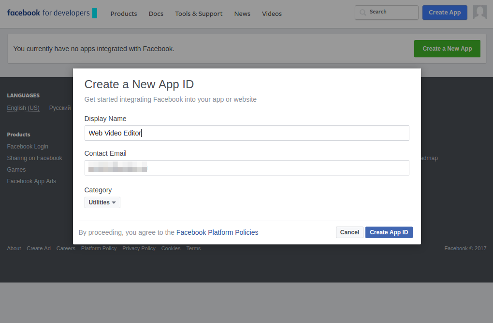
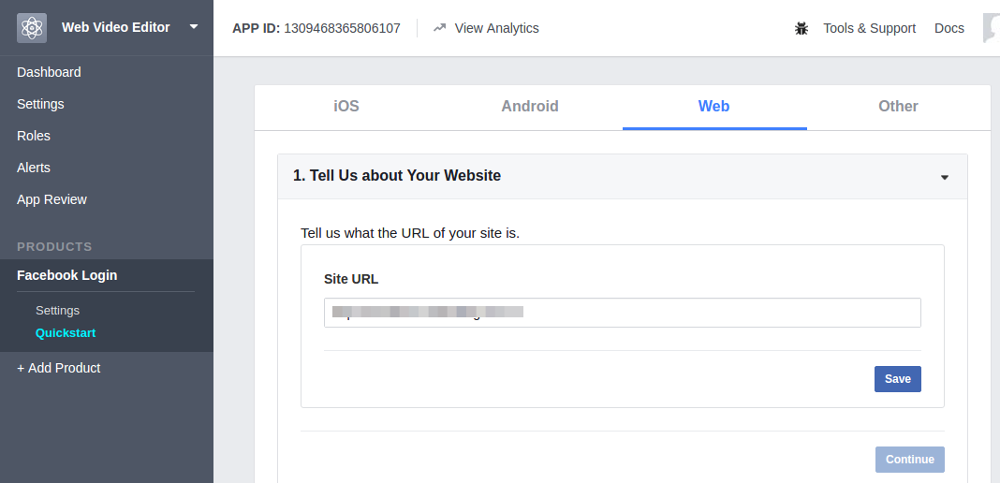
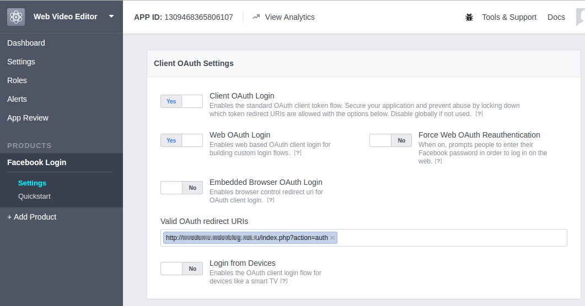
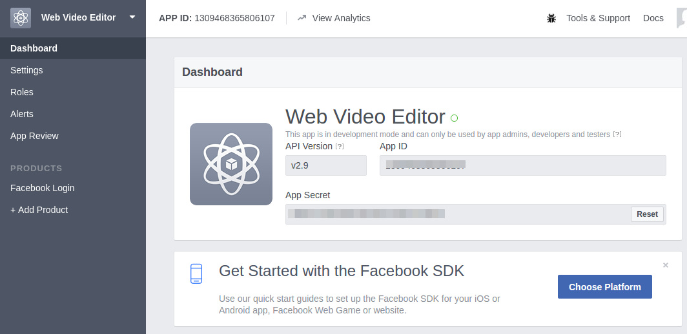
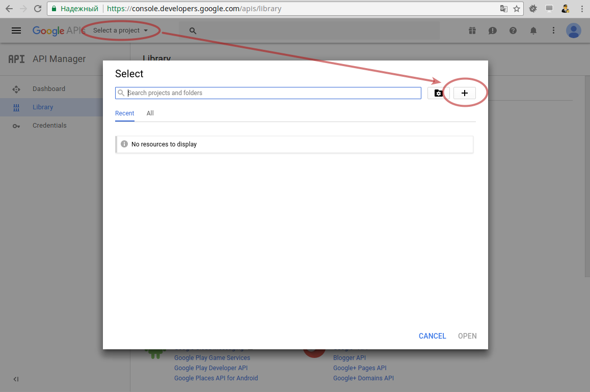
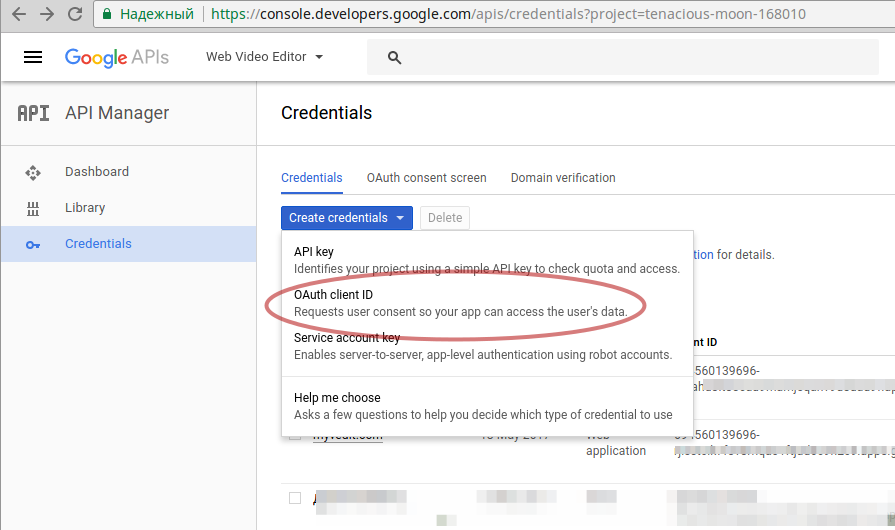
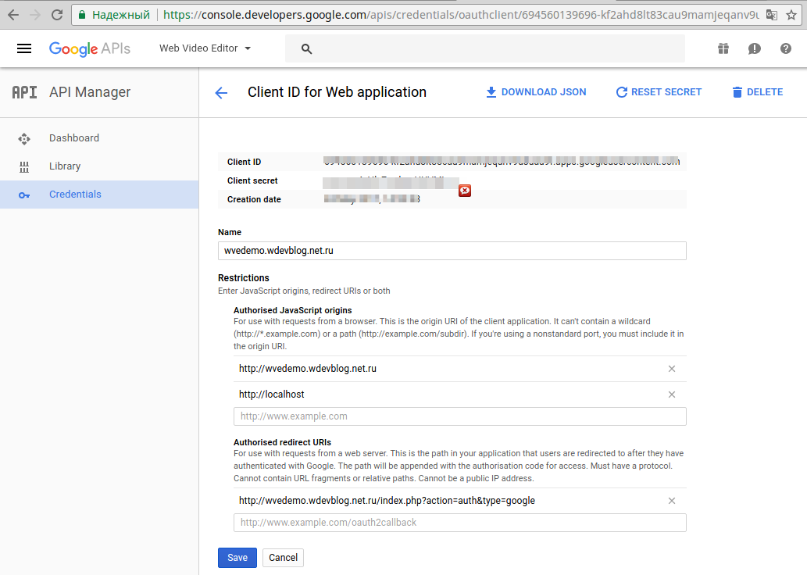

Web Video Editor Mini
PHP / JS application for video manipulation.
- Version: 1.2.1
- Created: 04/22/2017
- Last update: 10/04/2018
- By: Andycoder
- Email: andycoderw@gmail.com
Description
PHP / JS application for video manipulation. Allows you to cut the video into pieces and combine them. Convert video formats: MP4, WEBM, FLV, OGV.
Features and capabilities
- For video manipulations are used server application FFmpeg.
- Ability to cut and combine pieces of video.
- Convert video formats: MP4, WEBM, FLV, OGV.
- Import and merge video, images, audio.
- Ability to overlay text on video.
- Ability to add background audio.
- Showing the progress of processing.
- Processing queue system for users.
- Facebook authentication
- Google authentication
- Registration, authorization, password recovery.
- HTML5 video player.
- Upload video 3 ways: file, from YouTube, by URL.
- Cut fast - cut the fragment without re-encoding.
- Simple files database.
- Simple configuration (in file).
- Ability to translate interface. Ready translation files for English and Russian.
- Nice interface and adaptive layout (Bootstrap 4).
- Open and clean source code.
System requirements
- Linux server (other is not tested)
- PHP 5.3+ (including 7.0+)
- Web server Apache or Nginx
- FFmpeg 2.8+
- Availability of Cron
Installation
- Install server software (instructions below).
- Create web server configuration (instructions below).
- Upload content of the archive upload folder to the server.
- Set permissions 777 for folders: /database/, /public/userfiles/ and all nested.
-
Open in a text editor the file /config/config.php and configure (the file has comments).
Configure Facebook authentication (instructions below).
Please do not forget to enter your email in the parameter "$config['admin_auth_email']". After you register a user with such an email, he will have administrator rights. -
Create task for Cron for queue processing.
Cron task (once per 1 minute):
*/1 * * * * php -f /var/www/mysite.com/cron.php queue > /dev/null
On the dedicated server or VDS you need in the terminal run the command:
sudo crontab -e
Add new string.
- Open in your browser the address of the site or folder where you have installed the app.
- Finish.
Facebook authentication
- Open page Menage Apps. If you are not registered as developer, you need to register (click button "Register Now").
-
Click button "Create a New App", set Application name and save.
 -
On the page "Add Product" in line "Facebook Login" click button "Get Started".
Choose option "Web".
Set "Site URL" and save.
 -
On the product settings page enter redirect URL in field "Valid OAuth redirect URIs".
Example: http://[YOUR SITE ADDRESS]/index.php?action=auth
 -
Go to Dashboard page.

Copy App ID and paste to value of $config['facebook_app_id'] in /config/config.php.
Copy App Secret and paste to value of $config['facebook_secret_key'] in /config/config.php.
Set your Admin email to value of $config['admin_auth_email'].
Google authentication
-
Open Google API Console and create new project.


-
Go to page Credentials, click the button "Create credentials" and select "OAuth cliend ID". Set Application type - Web application.

Fill in all the fields. Set "Authorised redirect URIs" - http://[YOUR SITE ADDRESS]/index.php?action=auth&type=google.
 -
Copy Client ID and paste to value of $config['google_client_id'] in /config/config.php.
Set your Client secret to value of $config['google_secret_key']. -
Go to the "OAuth consent screen" tab and fill in all fields in accordance with the description.
Also you need to confirm domain ownership on tab "Domain verification".
Configure web server (Apache or Nginx)
As the root directory for your web site, you need to specify the folder /public/.
Example configuration for Nginx:
server {
listen 80;
server_name your-site.com www.your-site.com;
charset utf-8;
client_max_body_size 500m;
client_body_buffer_size 128k;
client_header_timeout 240;
client_body_timeout 240;
fastcgi_read_timeout 240;
index index.php;
root /var/www/your-site.com/public;
error_log /var/log/nginx/your-site.com_error.log;
access_log /var/log/nginx/your-site.com_access.log;
location / {
root /var/www/your-site.com/public;
index index.php;
}
location ~* \.(jpg|jpeg|gif|css|png|js|ico|xml)$ {
access_log off;
expires max;
log_not_found off;
root /var/www/your-site.com/public;
}
location = /robots.txt {
allow all;
log_not_found off;
access_log off;
}
# Deny all attempts to access hidden files such as .htaccess, .htpasswd, .DS_Store (Mac).
location ~ /\. {
deny all;
access_log off;
log_not_found off;
}
location ~ \.php$ {
fastcgi_pass unix:/var/run/php5-fpm.sock;
fastcgi_index index.php;
include fastcgi_params;
fastcgi_param SCRIPT_FILENAME $document_root$fastcgi_script_name;
include /etc/nginx/fastcgi.conf;
}
}
Example for Apache:
Listen 80
<VirtualHost *:80>
DocumentRoot "/var/www/your-site.com/public"
ServerName your-site.com
# Other directives here
</VirtualHost>
You can install the app to the folder of the domain. For this you need to edit the path in the application configuration.
Installing server applications
Installing FFmpeg on Linux
Developer website: http://ffmpeg.org/
Install FFmpeg recommended by this manual:
https://trac.ffmpeg.org/wiki/CompilationGuide/Ubuntu
Need to install any additional applications that are listed in this manual.
Attention!
It is strongly recommended to install all applications in a folder /usr/bin/ and /usr/ffmpeg_build/.
To do this in the instructions you need to replace all "$HOME" to "/usr". For install open command line (terminal).
Example:
mkdir ~/ffmpeg_sources cd ~/ffmpeg_sources wget http://ffmpeg.org/releases/ffmpeg-snapshot.tar.bz2 tar xjvf ffmpeg-snapshot.tar.bz2 cd ffmpeg PATH="$PATH:/usr/bin" PKG_CONFIG_PATH="/usr/ffmpeg_build/lib/pkgconfig" ./configure \ --prefix="/usr/ffmpeg_build" \ --extra-cflags="-I/usr/ffmpeg_build/include" \ --extra-ldflags="-L/usr/ffmpeg_build/lib" \ --bindir="/usr/bin" \ --enable-gpl \ --enable-libass \ --enable-libfdk-aac \ --enable-libfreetype \ --enable-libmp3lame \ --enable-libopus \ --enable-libtheora \ --enable-libvorbis \ --enable-libvpx \ --enable-libx264 \ --enable-nonfree \ --enable-x11grab PATH="$PATH:/usr/bin" make sudo make install make distclean hash -r
Instructions for use
The application has a simple intuitive interface.
Security notes
Attention! This is a simplified application and uses files for the database.
The folder "database" should not be available for viewing by HTTP. This folder should be outside the root folder of the site.
See configuration examples for Nginx and Apache above.